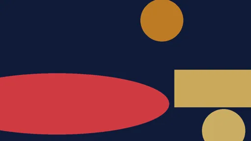
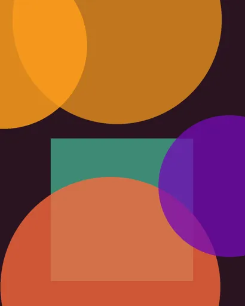
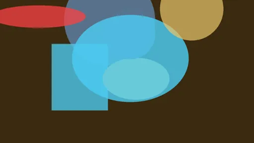
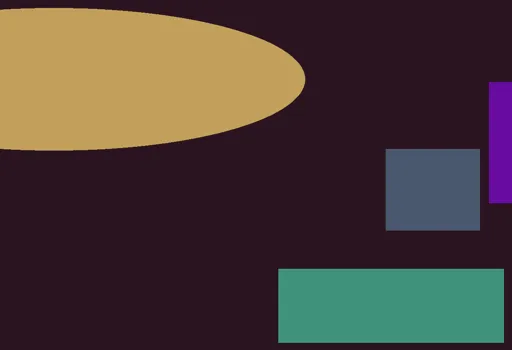
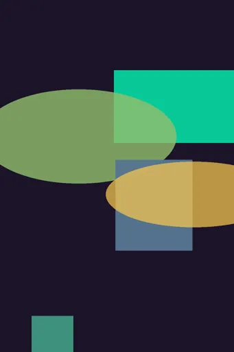

Prompt
Forge
Gallery
Collections
Models
Inspiration
Film
Forge
Studio
Settings
Baserow
Discord
AI
⌕
All platforms
civitai
lexica
x
midjourney
tensorart
seaart
pixai
All models
Flux
SDXL
Illustrious
Midjourney
Kling
Wan
Hunyuan
SD 1.5
Images + video
Images
Videos
All techniques
35mm
50mm
85mm
aerial
anamorphic
atmospheric-haze
blue-hour
character-consistency
cinematic-lighting
crane
crash-cam
deep-focus
dolly
dolly-zoom
double-exposure
dutch-angle
eye-level
film-grain
fisheye
fpv
glitch
golden-hour
handheld
high-angle
high-key
hyperlapse
image-to-video
jump-cut
kaleidoscope
lens-flare
lip-sync
long-exposure
loop
low-angle
low-key
macro
match-cut
morph
motion-blur
nine-grid
one-take
orbit
pan
pov
practical-lights
product-cinematography
rack-focus
reference-workflow
reverse
rim-light
shallow-dof
slow-motion
snorricam
speed-ramp
split-screen
start-end-frame
steadicam
stop-motion
telephoto
tilt
tilt-shift
timelapse
tracking
transition
underwater
volumetric-light
whip-pan
wide-angle
zoetrope
zoom
Any time
Last 24h
Last 7 days
Last 30 days
★ Favorites
NSFW

☆
🔖
▶ 0:12
close-up of frost forming on a window pane, macro, cold blue tones
☆
🔖
brutalist library interior, concrete coffers, one shaft of sunlight, wide angle
☆
🔖
still life of citrus on linen, north window light, medium format look
☆
🔖
▶ 0:09
handheld push-in through a neon arcade, motion blur, VHS artefacts
☆
🔖
character sheet turnaround of a desert scavenger, front side back, consistent character
☆
🔖
wide establishing shot of a lighthouse in a storm, spray across the lens, overcast

☆
🔖
botanical illustration of a blue poppy, vintage plate style, aged paper
☆
🔖
▶ 0:05
slow orbit around a glass sculpture, caustics dancing on the floor, studio void
☆
🔖
low-poly island floating in a pastel sky, soft gradients, tiny waterfall
★
🔖
★
noir detective in a smoky office, venetian blind shadows, high contrast black and white
☆
🔖
cozy reading nook illustration, warm lamp glow, rain on the window, soft textures

☆
🔖
▶ 0:09
timelapse of clouds rolling over mountain ridges, hyperlapse, high contrast
☆
🔖
knight in silver armor standing in a wheat field, golden hour, painterly brushwork
☆
🔖
ceramic teapot shaped like a sleeping cat, soft morning window light, shallow depth of field
☆
🔖
street photography, Tokyo crossing at night, rain reflections, 35mm, available light
☆
🔖
art deco travel poster of a red monorail crossing a desert, flat colors, geometric sun

☆
🔖
▶ 0:12
macro shot of ink dispersing in water, 120fps, backlit, black background
☆
🔖
watercolor fox in a birch forest, loose brushwork, visible paper texture, muted palette
★
🔖
★
anime keyframe, girl on a rooftop at blue hour, wind in hair, cel shading, film grain
☆
🔖
studio product shot of a matte black espresso machine, softbox reflections, seamless grey sweep

☆
🔖
editorial fashion portrait, brutalist concrete backdrop, hard noon light, sharp shadows, 50mm
☆
🔖
▶ 0:07
drone shot over a fog-covered pine forest at sunrise, slow dolly forward, volumetric god rays
☆
🔖
isometric cyberpunk city block at midnight, tilt-shift, clean vector shading, warm windows against cold streets
★
🔖
★
cinematic portrait of a woman in a rain-soaked neon alley, 85mm, shallow depth of field, volumetric light, wet asphalt reflections, cyan an…


 ▶ 0:09
▶ 0:09

 ▶ 0:05
▶ 0:05


 ▶ 0:07
▶ 0:07
 ▶ 0:09▶ 0:05★★▶ 0:07★
▶ 0:09▶ 0:05★★▶ 0:07★